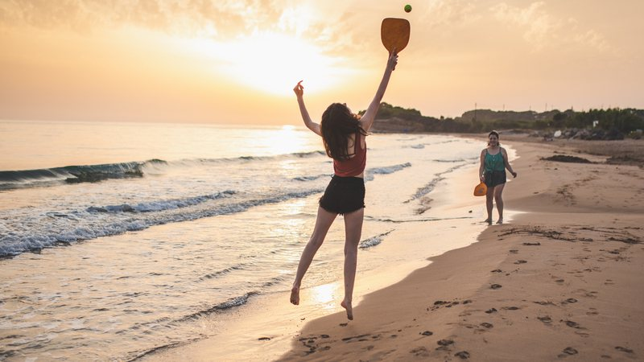

Baseball
Baseball Beach soccer
Beach soccer Biribol
BiribolTão antigos quanto o homem, os esportes são uma das invenções mais benéficas do homem. além de manter o corpo saudavel, ainda auxiliam na riação de uma série de comportamentos positivos, como a humildade, a união, a empatia, detre outros.
E os esportes com bola são sem nenhuma dúvida, os mais populares. Mas você sabe a diferença entre alguns deles? É justamente isso que iremos descobrir abaixo.
| Esporte | Origem | Ambiente | Objetivo | Equipe | |
|---|---|---|---|---|---|
| 1Baseball |
EUA, 1971 | Campo com 1/4 de círculo, de 92 a 108,2m de raio. | Realizar o maior número de corridas. | Nove jogadores em cada time. | |
| 2 Beach soccer |
1930, Brasil | Quadra de areia com 35 ou 37m x 26 ou 27 de largura. | Realizar gols no campo do adversário. | Cinco jogadores em cada time | |
| 3 | Biribol |
1968, Brasil | Piscina com 4 x 8 x 1,3m | Derrubar a bola na quadra adversária | 2 a 4 jogadores por time |
| 4 |  Frescobol | Brasil, 1946 | Ao ar livre | Manter a bola no ar pelo maior tempo possivel | Geralmente um contra um |
Saiba mais acessando o link